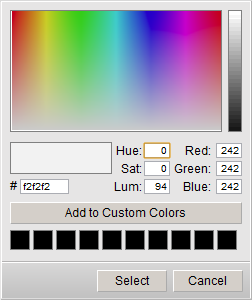
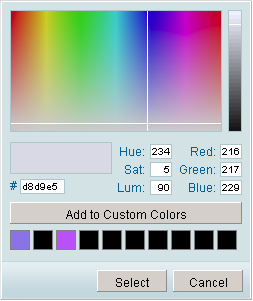
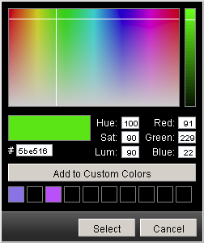

dhtmlxColorPicker Configuration
Setting Skin
The user can set one of the predefined skins for dhtmlxColorPicker in the following way:
myCP.setSkin(skin);
Note: to set the default skin, the user should write an empty string as the parameter for setSkin() method.
Available Skins
The following skins are available for this component:
- the default one

- dhx_blue

- dhx_black

Setting Color Picker's Position
There is a method in dhtmlxColorPicker that allows to change its position on the fly:
myCP.setPosition(x,y);
This method sets new left (x) top (y) position of the component.
Setting/Getting Color
The user can set the initial color for the Color Picker using setColor() method:
myCP.setColor(color);
The parameter color can be set like:
- A string with hex color format;
- An array of decimal values of Red, Green, and Blue;
- A sting with decimal values of Red, Green, and Blue.
myCP.setColor("#123456"); //or myCP.setColor([56,34,12]); //or myCP.setColor("rgb(10,27,99)");
The color currently selected in the Color Picker can be easily got by method getSelectedColor():
var colorSelected = myCP.getSelectedColor();
Hiding/Showing Color Picker
The Color Picker can be easily shown/hidden in the following way:
myCP.show(); myCP.hide();
Removing Color Picker
The following method removes the color picker:
myCP.close();
Linking Color Picker to Object
The color picker can be linked to some objects on page. In this case, linkTo() method is used. The first parameter of this method indicates the object which color will be changed, the second one - indicates the object that will call the color picker, and the third (optional) parameter will contain the hex code of the chosen color.
For example, the code below shows the color picker linked to inputs and a button. The color picker is called by pressing the button. The chosen color will be set as background for one input, and another input will contain this color's value in hex format:
<input id="a1"> // create an input <input id="a3"> //create one more input <input type="button" value="Select color" id="a2"> // create a button <script> var myCP = new dhtmlXColorPicker(false,false,false,true); myCP.setImagePath("[full path to this category]/codebase/imgs/"); myCP.init(); myCP.linkTo("a1","a2","a3"); //link to the button and the inputs </script>
Setting Custom Colors
Custom Colors palette can be shown by setting customcolors parameter to true. This palette can be used to keep colors that are most used or popular with the user. The colors can be added there by the end-users in the following way:
- Selecting the necessary color;
- Pressing “Add To Custom Colors” button.
The chosen value will be saved in cookies, thus, it will be available for the user next time he visits the page.
Custom colors can be also set by script through method setCustomColors():
myCP.setCustomColors(colors);
The parameter colors is the array of predefined colors written in hex color format:
myCP.setCustomColors("#aabbcc,#00ff00");
Making Color Picker Multilingual
dhtmlxColorPicker allows its users to add and use different languages with the ability to switch between them dynamically. First, the user needs to define necessary language settings with script (if no language pack is provided with the color picker package). This can be done in the following way:
dhtmlxColorPickerLangModules = {}; dhtmlxColorPickerLangModules['en-us'] = { langname: 'en-us', labelHue : "Hue", labelSat : "Sat", labelLum : "Lum", labelRed : "Red", labelGreen : "Green", labelBlue : "Blue", btnAddColor : "Add to Custom Colors", btnSelect : "Select", btnCancel : "Cancel" }; dhtmlxColorPickerLangModules['ru'] = { langname: 'ru', labelHue : "Отт", labelSat : "Нас", labelLum : "Ярк", labelRed : "Крас", labelGreen : "Зел", labelBlue : "Син", btnAddColor : "Добавить к выбранным", btnSelect : "Выбрать", btnCancel : "Отмена" }
When you have necessary language settings, you can switch between them using loadUserLanguage() method indicating the id of the language you used for its definition:
myCP.loadUserLanguage("ru");
Hiding Color Picker on Color Select
By default, the Color Picker's configuration presupposes that the component will be hidden/closed after the end-user chooses the color in the palette and presses the button “Select”.
Method hideOnSelect() is responsible for this behavior of the color picker. If this method is set to true, dhtmlxColorPicker will behave the way that was described above. Setting this method to false means that the component will stay on page even after pressing the button “Select”.
myCP.hideOnSelect(true|false); // true by default